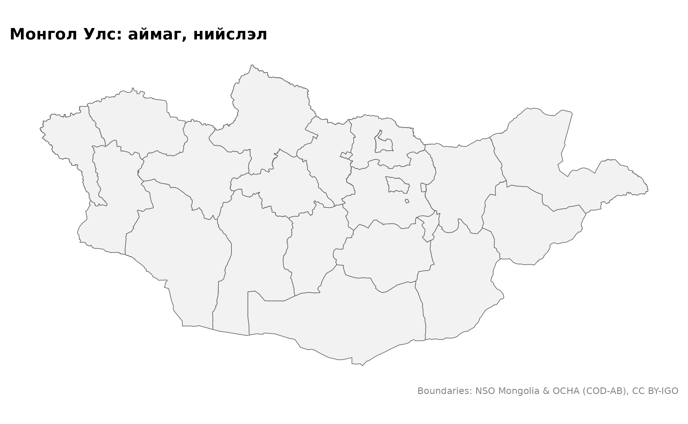
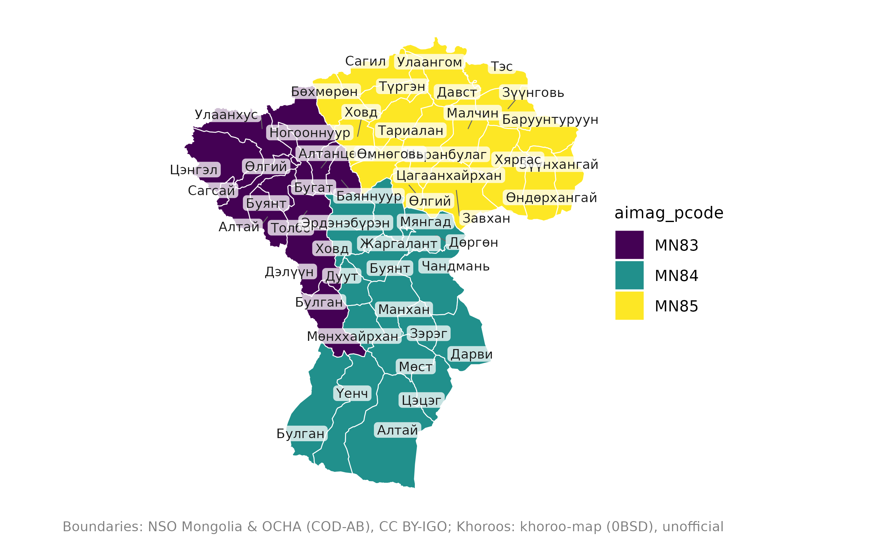
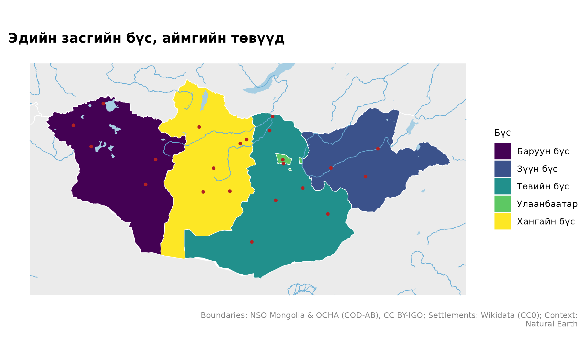
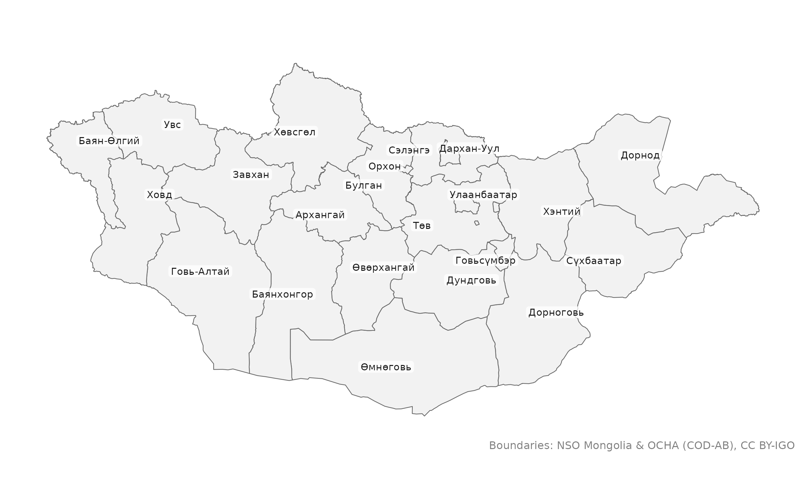

mongolmaps нь Монголын хил зааг, газар нутгийн нэр, газрын зураг зурах функцүүдийг агуулна. Хялбаршуулсан хил зааг багцад багтсан тул доорх жишээнүүд интернетгүй ажиллана.
Багцуудыг нэг удаа суулгана:
install.packages(c("mongolmaps", "ggplot2"))Эхний газрын зургаа зурах
library(mongolmaps)
options(mongolmaps.lang = "mn")
library(ggplot2)
mn_map(mn_aimags(), title = "Монгол Улс: аймаг, нийслэл")
mn_aimags() хил заагийг авч, mn_map()
зурна. Гарсан зураг нь ggplot объект тул ggplot2-ийн функцээр өөрчилж
болно.
Хил заагийн түвшинг сонгох
Монгол Улс 21 аймаг, нийслэл Улаанбаатартай. Аймаг сумдад, сум багуудад хуваагдана. Улаанбаатар дүүргүүдэд, дүүрэг хороодод хуваагдана.
| Хэрэгцээ | Функц | Багцад багтсан эсэх |
|---|---|---|
| Улсын хил | mn_country() |
Тийм |
| Эдийн засгийн дөрвөн бүс, Улаанбаатар | mn_regions() |
Тийм |
| 21 аймаг, нийслэл | mn_aimags() |
Тийм |
| 330 сум, 9 дүүрэг | mn_soums() |
Тийм |
| Нийслэлийн хил | mn_ub() |
Тийм |
| Есөн дүүрэг | mn_ub_districts() |
Тийм |
| 204 хороо | mn_khoroos() |
Тийм, албан бус хил |
| Хөдөөгийн баг | mn_bags() |
Нэр, код бий; хил заагийн файлаа өгнө |
Функцүүд нь дүрс хадгалах geometry баганатай
sf хүснэгт буцаана. pcode нь давтагдахгүй код,
name нь нэр, nso_code нь ҮСХ-ны код,
parent_pcode нь харьяалах нэгжийн код,
area_km2 нь талбай.
aimags <- mn_aimags()
knitr::kable(head(sf::st_drop_geometry(aimags)[c("name", "pcode", "nso_code")]))| name | pcode | nso_code |
|---|---|---|
| Улаанбаатар | MN11 | 511 |
| Дорнод | MN21 | 421 |
| Сүхбаатар | MN22 | 422 |
| Хэнтий | MN23 | 423 |
| Төв | MN41 | 341 |
| Говьсүмбэр | MN42 | 342 |
name_en, name_mn, name_mns нь
англи, кирилл монгол, латин монгол нэрийг хадгална. Дэлгэрэнгүйг Нэр ба код-оос үзнэ үү.
Нэг хэсгийг сонгон зурах
aimag эсвэл region-оор газар нутгаа
сонгоно. Нэрийн түгээмэл өөр бичлэгүүдийг танина.
west <- mn_soums(aimag = c("Khovd", "Uvs", "Bayan-Ulgii"))
mn_map(west, title = "Баруун Монголын сумд")
mn_aimags(region = "Western") нь баруун бүсийн бүх
аймгийг авна. Олон нэр давхардах үед нэг аймгийг тусад нь зурвал уншихад
хялбар.
Суурин газар, гол, хөрш орнуудыг нэмэх
Эдгээр жижиг давхарга багцад багтсан.
mn_map(mn_regions(), fill = name, context = TRUE) +
geom_sf(
data = mn_settlements(type = c("capital", "aimag_centre")),
colour = "firebrick", size = 1
) +
labs(title = "Эдийн засгийн бүс, аймгийн төвүүд", fill = "Бүс",
caption = paste(strwrap(mn_citation(c("admin", "naturalearth", "settlements")), width = 95), collapse = "\n"))
Кирилл нэрээр тэмдэглэх

options(mongolmaps.lang = "mn") нь монгол нэрийг
анхдагчаар сонгоно. Үсэг дөрвөлжин болж харагдвал кирилл дэмждэг фонт
сонгоно. Жишээ нь + theme_mn(base_family = "Arial").
Координат ба нарийвчлал
Хил зааг нь өргөрөг, уртрагийн EPSG:4326 системтэй.
mn_map() зурагт тохирох тусгагийг сонгоно. Улсын түвшний
талбайн ажилд crs = "albers", Улаанбаатарт
crs = "utm" ашиглаж болно.
Доорх нэмэлт команд бүтэн нарийвчлалтай хил заагийг нэг удаа татаж хадгална. Эхний удаад интернет хэрэгтэй.
khovd <- mn_soums(aimag = "Khovd", resolution = "high")Дараагийн алхам
- Өгөгдлөө газрын зурагтай холбох.
- Улаанбаатарын дүүрэг, хороог зурах.
- Зам, ус, суурин газар нэмэх.
- Өндөршил, газрын бүрхэвч, хүн амын тор зурах.
mn_sources() эх сурвалж, лицензийг жагсаана.
mn_citation() ишлэх текстийг өгнө. Хороо болон тэдгээрээс
нэгтгэсэн дүүргийн дотоод хил нь албан бус; эх файлын огноо нь хил хүчин
төгөлдөр болсон огноо биш.